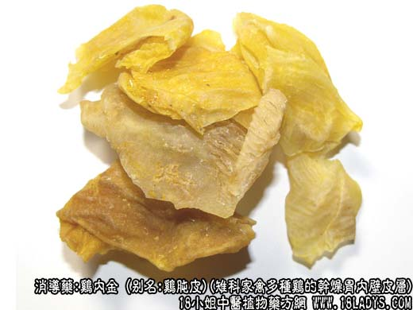

鸡内金为常用中药。始载《神农本草经》丹雄鸡项下。原名“肶胵里黄皮”。
别名：鸡肫皮、鸡胗皮、内金。
来源：为雉科家禽多种鸡的干燥胃内壁皮层。
产地：全国各地均产。
性状鉴别：完整的内金呈曩状。长宽约4厘米左右，壁厚约1~2毫米。黄色、黄绿色或黄褐色。两面均有棱沟交错的皱纹。质脆，易碎，断面胶质样，有光泽。商品多碎成不规则的裂片。气微腥，味淡微苦。
以片大，完整，色黄，洁净者为佳。
主要成分：含胃激素、蛋白质，其中含多种氨基酸，如胱氨酸、精氨酸、色氨酸等，并含胆绿素类物质。
功效与作用：消食积、止泻痢遗溺。其原理为：
1、健胃。实验证明，口服鸡内金后，胃液的分泌量、酸度和消化力均增高；胃运动加强，胃排空率加快。鸡内金的催泌作用甚至强于肉粉。作用途径似科
是鸡内金消化吸收后进入血液内，通过体液因素而兴奋胃壁的神经肌肉装置。
2、强壮、滋养、收敛（前人有为鸡内金性涩）。
炮制：炒用或炒焦用。
性味：甘、平。
归经：入脾、胃经。
功能：理脾胃，消食，去积。
主治：食积不消，呕吐泻痢，小儿疳积等症。
临床应用：1、治消化不良，尤其适宜于因消酶不足而引起的胃纳不佳、积滞胀闷、反胃、呕吐、大便稀烂等。鸡内金对消除各种消化不良的症状都有帮助，可减轻腹胀、肠内异常发酵、口臭、大便不成形等症状。常配麦芽、山楂、白术、陈皮等。
2、治小儿遗尿，或成人之小便频数、夜尿、配桑螵蛸、龙骨、牡蛎、浮小麦等，方如内金汤。
对肾结石引起的血尿，常在治疗方剂内加入鸡内金15~18g。
3、治体虚遗精，尤其对肺结核患者之遗精有较好效果。用焙鸡内金粉18g，分为6包，每天服2次，每次一包，清晨和临星前开水送服。
4、试用于治疗慢性肝炎，以焙鸡内金粉15g，为一日量，分三次用蜜糖水冲服，以后浙增至每日量为30g共服两月，有一定疗效。
5、外用研未治皮肤病损。
使用注意：1、凡慢性痛和胃气不足者用鸡内金时宜炙用（焙用）。
2、粉蒸肉剂疗养优于煎剂。
用量：4.5~12g，大剂15~18g。
处方举例：内金汤：炙鸡内金9g（研末，冲）炙桑螵蛸4g，煅龙骨12g，煅牡蛎12g，浮小麦15g，炙甘草6g水煎服。
附：鸭内金因不易与胃壁分离，剥离时全部成碎片状，棱沟皱纹较稀，暗绿色或褐色，表面较粗糙或有反油现象，一般认为内金也有消食去积作用，但效用不及鸡内金。